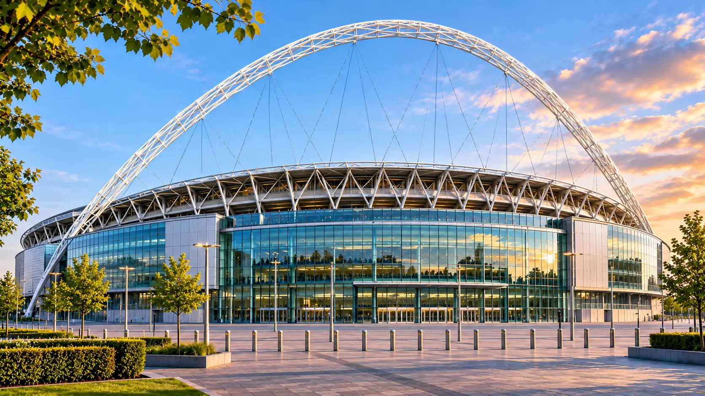

Wembley Stadium

Avec sa célèbre arche visible depuis une grande partie du nord-ouest londonien, Wembley est l'un des stades les plus emblématiques du football mondial. Reconstruit et inauguré en 2007, il accueillera les deux demi-finales ainsi que la finale de l'Euro 2028.
🚉 Transports et accès
Les stations Wembley Park (lignes Jubilee et Metropolitan), Wembley Stadium (Chiltern Railways) et Wembley Central (Bakerloo et trains) permettent de rejoindre l'enceinte. Depuis Wembley Park, l'accès s'effectue par la grande avenue piétonne Olympic Way.
Stations : Wembley Park · Wembley Stadium · Wembley Central
4 matchs de groupes, 1 quart de finale, 2 demi-finales et la finale.
Dates : 11, 14, 16 et 19 juin ; 30 juin ; 4, 5 et 9 juillet 2028.
💡 Conseil aux supporters
Pour la finale, un hôtel proche d'une ligne de métro directe peut être plus pratique qu'un logement immédiatement voisin du stade. Prévoyez une marge importante après le match pour les files d'attente.